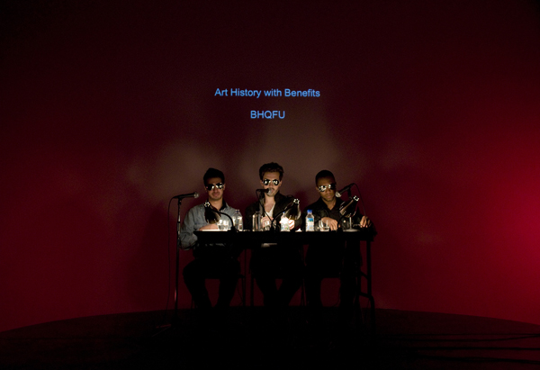
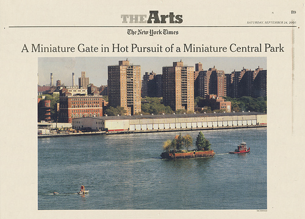
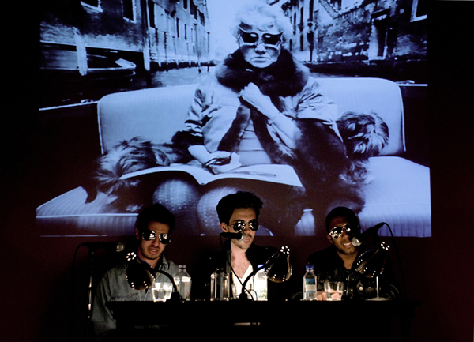

-
Bruce High Quality at X
by Alice Gregory November 10, 2009
Social critique – of gentrification, of the debt-model of graduate school, of the market value of contemporary art – is key in all the work of artist collective The Bruce High Quality Foundation. And though humor is consistently present, never does it betray moral seriousness or, it must be said, intellectual rigor. Experiencing a BHQF piece is like sharing funny anecdotes with a revered academic or reading the casual blog of a major journalist: unassuming though self-serious; comic though sophisticated.
Their best works are the large-scale projects that would seem impossible to complete as individuals. The liabilities of a collective – socializing inhibiting actual work, democratic processes inhibiting actual decision-making – are irrelevant when the end is in obvious proportion to the means, when the final product is more than just the sum of each member’s input. The Bruces always seem to capitalize on the inherent strengths of collaboration, and seldom do the potential handicaps reveal themselves. Previous projects include: The Gate: Not the Idea of the Thing but the Thing Itself, a Christo and Jean-Claude inspired gate set afloat next to Robert Smithson’s Floating Island; Cats on Broadway, an all-volunteer musical production on the Broadway Avenue that demarcates Bed-Stuy from Bushwick; and Isle of the Dead, an amateur zombie film featuring hundreds of extras shown in an abandoned theatre on Governor’s Island.
Their Performa-sponsored, X-Initiative-hosted “lecture,” Art History with Benefits, was thoroughly representative of this sort of politicized material and ironic presentation typical of the collective. There’s an element of spectacle to all of their projects, but it’s an informed spectacle, not without a theoretical and historical grounding that prevents any sort of easy dismissal. For the presentation, three Bruce High Quality members, all male, all in reflective sunglasses, all with a mini bottle of Fiji water in hand, took a seat in front of a large projection screen and began a thirty-minute “art history lesson.”
The lecture was the culmination of a course at the unaccredited Bruce High Quality Foundation University, which opened in Tribeca in September. The syllabus reads: “Art History with Benefits examines the romance, figuratively and literally, between cultural funding and sex. Topics such as the psychology of patronage, the artful fantasies of poverty and wealth, and the seductive wiles of both art teachers and dealers will be probed.”
With little intonation or affect distinguishing their voices, the three read from a scripted compendium of quotations and reflections. The spoken words and the projected images, while obviously choreographed, were synchronized by a logic of sarcasm and irony, a dangerous tone to take in an era in which self-deprecation and cynicism seem like the only pervasive spirits, permeating almost all popular trends from faux-vintage acid-washed denim, to the suddenly dominant deadpan originally characterized by The Office, to a thousand tiresome retro dance parties. They opened, for instance, by reading the introduction of Exodus 25 in which God demands that Moses solicit the children of Israel for material goods – gold, silver, brass, linen, badgers’ skins, anointing oils, Onyx stones – and paired it with an image of a Walmart Supercenter. I worried that the presentation would continue with these sorts of gimicky juxtapositions, but the pace picked up and that worry dissolved. The dissonance between the words and the images, like the visual punch lines popularized by The Daily Show, elicited booming laughs and exaggerated sighs from the audience. Breadth, not chronology, seemed to structure the “lesson.”
The sheer volume of images shown and material read was staggering. Excerpts were quoted from Hegel’s master-slave dialectic while images from the HBO series Rome pulsed on the screen; a discussion of Vermeer’s marriage to a younger woman was illustrated not only by a reproduction of “The Girl with the Wine Glass,” but also by a photograph of Anna Nicole Smith with a dying J. Howard Marshall. Orson Wells was quoted on Switzerland; Marilyn Monroe was quoted on Hollywood. The resumes of First Ladies were listed, as were all of the artists that Peggy Guggenheim is said to have slept with. The audience was bombarded with the words and images of Basquiat, Warhol, Becket, Oprah, James Frey, Hitler, Josephine Baker and Adolf Loos. What began as skepticism on my part melted into an appreciative transfixion. Within minutes, I began attempting to anticipate the images that would correspond with the narration.
Highlighting the stark disparity between academic language and pop culture is often used as nothing more than a cheap gag, but in the case of Art History with Benefits, the seemingly endless stream of symbolic manipulations was strikingly evocative. The pairings effectively equalized the subject matter, elevating the material of our media-driven culture while urging the audience to take academia and the narrative of art history itself with a grain of salt.
Ever so faintly, the opening to George Michael’s Father Figure began to play. The lecture stopped, the panel began to sing along, and the slideshow of art world images quickened, often with an exaggerated Ken Burns Effect at play. The song choice was perfect: slightly ironic, undeniably moving, quality kitsch and mesmerizing. I was lulled into a spellbound state. The chorus approximates the sort of willed critique against – and admitted indebtedness to – a historically patriarchal art world, which seemed, ultimately, to be the lesson we were to have learned:
“I will be your father figure/ Put your tiny hand in mine/ I will be your preacher teacher/ Anything you have in mind/ I will be your father figure/ I have had enough of crime/ I will be the one who loves you/ Until the end of time”

{kind=link}
{kind=link}
{kind=link}
{kind=link}